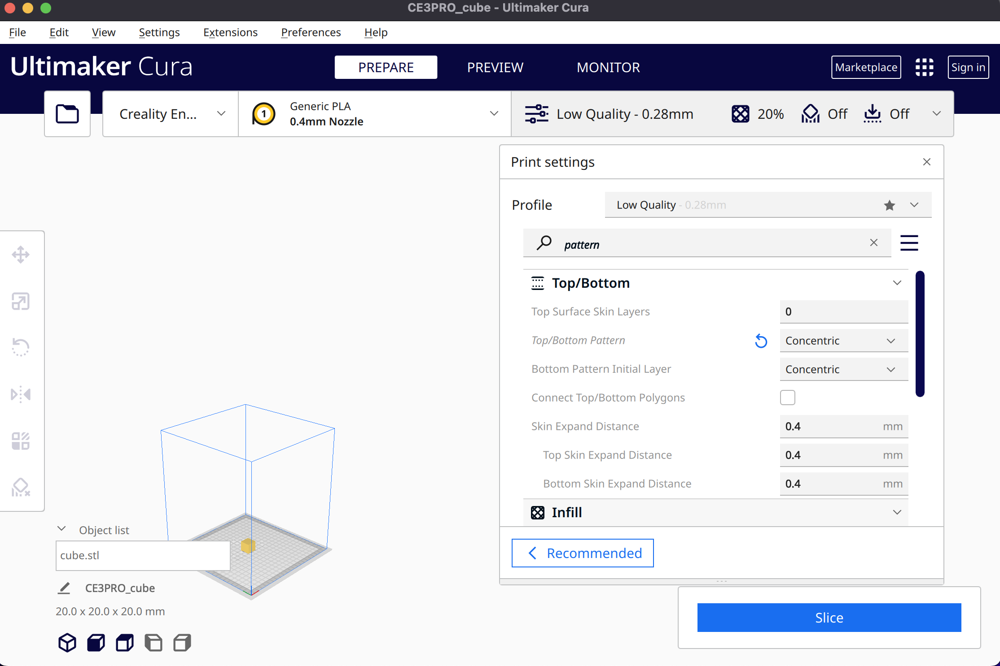
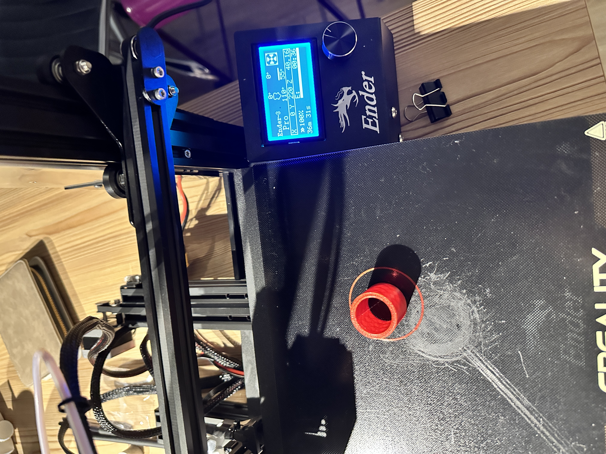
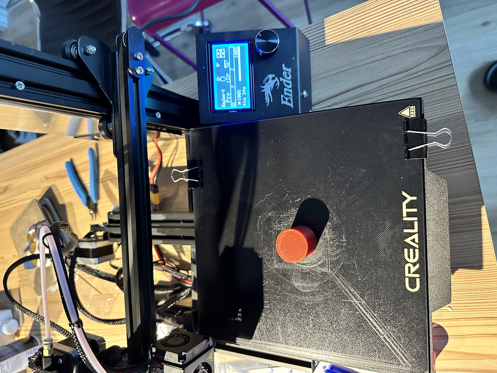
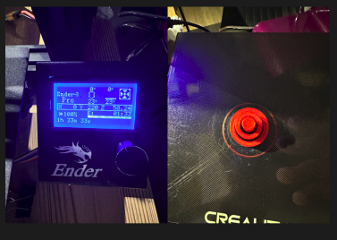

A3: Getting started with 3D printing
by Kefeng Wang in HCDE598

3D Printer Set-Up
It cost us two and a half hours to set up our 3D printer. I shared this printer with Kyle and Sherry. Unboxing and connecting each piece are quite easy but time-consuming.
However, we spent over 3 hours adjusting the bed's height level. The gear of the left top corner was as down as most, but it was still too far away from the extruder. So we chose to adjust the height of the extruder instead.
We also run the test print (square) to make sure everything goes well.
3D Printing
The first cub I made was low quality ,and it took 20mins for my printer to complete. The dimension of it is 20.16mm, 19.96mm, and 19.70mm. The bottom part was melted a little bit. But this situation only happened on the cubes.

The second cube is super quality. It cost more than 50mins to complete. The dimension of the super quality cube is 19.67mm, 20.32mm, and 20.17mm.

The third cube is standard quality. It cost 22mins to complete. The dimension of the standard quality cube is 20.02mm, 19.38mm, and 19.94mm.

The concentric cube is low quality. It cost 36mins to complete. The reason why I preferred the low quality is that it is faster. The dimension of the super quality cube is 20.30mm, 19.72mm, and 20.18mm.


The tube with single extrusion takes about 36mins to complete. The thickness of my tube is 3mm, which I set in Rhino. I guess that is the reason why this is no difference between single extrusion and double extrusion. The dimension is 29.82mm(diameter), 29.93(height), and 3.52 (thickness).

The tube with double extrusion and random z-seam alignment is about 46mins. The dimension is 30.11mm(diameter), 30.04(height), and 3.38 (thickness).

The difference between o.1mm tolerance and 0.001mm tolerance in cylinders is more obvious than the difference between single and double extrusions. 0.1mm tolerance makes it have more edges. But there is only a slight difference in printing time. It took 41mins to complete. The height is 29.80mm, and the diameter is 29.68mm.

The 0.001mm tolerance cylinder took 40mins. The surface is more curved than that of 0.1mm tolerance. The time for printing out this cylinder is 40mins and 44s. The height is 30.05mm, and the diameter is 29.07mm.
The special mode "spiralize outer contour" is about 26 min to complete. The diameter is 29.51mm, and the height is 29.08mm.
The support mode takes over more than 50min. The bottom support is hard to peel off. The height is 30.10mm, and the diameter is 29.83mm.
This is my nested model. It takes 1h 33 mins to complete.

Here is all the documentation for assignment 3!
You can go back to the HOME PAGE from here.